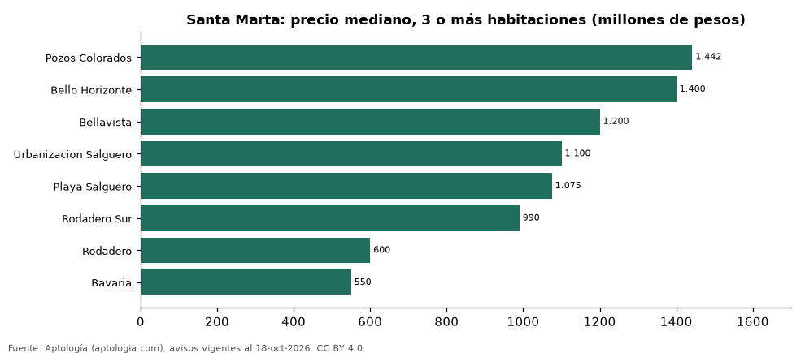

Dónde cuesta más y menos comprar un apartamento de 3 o más habitaciones en Santa Marta: ranking de barrios (octubre 2026)
Estudio con datos abiertos (CC BY 4.0). Versión original: https://www.aptologia.com/estudios/venta-apartamentos-de-3-o-mas-habitaciones-por-barrio-santa-marta-2026
En Santa Marta, un apartamento de 3 o más habitaciones cuesta 1.442 millones de pesos en la mediana en Pozos Colorados, el barrio más caro, y 550 millones de pesos en Bavaria, el más barato: 2,6 veces menos. Comparamos 8 barrios con al menos 30 avisos de 3 o más habitaciones.
Resumen: analizamos 755 apartamentos en venta de 3 o más habitaciones en 8 barrios de Santa Marta.
Actualizado: 18 de octubre de 2026 (datos del 18 de octubre de 2026) · Próxima actualización: mensual.

Resumen
| Indicador | Valor |
|---|---|
| Más caro | Pozos Colorados: 1.442 millones de pesos |
| Más barato | Bavaria: 550 millones de pesos |
| Diferencia | 2,6 veces |
| Barrios | 8 |
Precio de un apartamento de 3 o más habitaciones por barrio
| Barrio | Precio (mediana) | Rango típico (P25–P75) | Área mediana (m²) | Avisos |
|---|---|---|---|---|
| Pozos Colorados | 1.442 millones de pesos | 1.150 millones de pesos – 1.800 millones de pesos | 128 | 108 |
| Bello Horizonte | 1.400 millones de pesos | 875 millones de pesos – 1.750 millones de pesos | 148 | 127 |
| Bellavista | 1.200 millones de pesos | 728 millones de pesos – 1.450 millones de pesos | 182 | 58 |
| Urbanizacion Salguero | 1.100 millones de pesos | 800 millones de pesos – 1.550 millones de pesos | 115 | 41 |
| Playa Salguero | 1.075 millones de pesos | 842 millones de pesos – 1.712 millones de pesos | 112 | 68 |
| Rodadero Sur | 990 millones de pesos | 650 millones de pesos – 1.750 millones de pesos | 155 | 83 |
| Rodadero | 600 millones de pesos | 450 millones de pesos – 985 millones de pesos | 125 | 147 |
| Bavaria | 550 millones de pesos | 420 millones de pesos – 775 millones de pesos | 143 | 123 |
Medianas del precio pedido; solo barrios con 30 avisos o más.
Preguntas frecuentes
¿Cuánto cuesta comprar un apartamento de 3 o más habitaciones en Pozos Colorados? 1.442 millones de pesos en la mediana (octubre de 2026); la mitad central entre 1.150 millones de pesos y 1.800 millones de pesos.
¿Dónde es más barato comprar un apartamento de 3 o más habitaciones en Santa Marta? En Bavaria: 550 millones de pesos en la mediana.
Metodología
- Fuente: exportes nocturnos de la base de datos de Aptología (aptologia.com) del 18 de octubre de 2026: avisos vigentes de vivienda en portales inmobiliarios de 13 países, recogidos por Aptología y vistos en línea entre el 11 y el 18 de octubre de 2026. Corte: 18 de octubre de 2026.
- Depuración: se eliminan duplicados exactos (misma ciudad, zona, tipo, precio, moneda, área, habitaciones y baños) y los precios fuera del percentil 1–99 de cada país, operación, moneda y tipo; el precio por m² usa solo avisos con área declarada entre 12 y 2.000 m² y también se recorta al P1–P99.
- Qué se mide: precios pedidos (publicados), no precios de cierre. En arriendo, el canon mensual sin administración, gastos comunes ni condominio.
- Muestra mínima: cada cifra publicada se apoya en al menos 30 avisos; las celdas con menos se omiten.
- Colombia: Precios en pesos colombianos, sin conversión de moneda.
- Limitaciones: la cobertura depende de los portales que recorre Aptología en cada país y es mayor en las ciudades grandes y en los segmentos medio-alto y alto; el área es la que declara el aviso, sin verificar; los nombres de zona vienen de los portales.
- Privacidad: solo se publican agregados; no se publica ningún dato personal, enlace a avisos ni nombre de anunciante.
- Datos abiertos: datos.csv, licencia CC BY 4.0.
Cómo citar
Pinzón Pineda, D. M. (2026). Dónde cuesta más y menos comprar un apartamento de 3 o más habitaciones en Santa Marta: ranking de barrios (octubre 2026). Aptología (aptologia.com). https://github.com/elbroker/aptologia-datos/tree/main/estudios/venta-apartamentos-de-3-o-mas-habitaciones-por-barrio-santa-marta-2026. Datos: datos.csv, licencia CC BY 4.0.